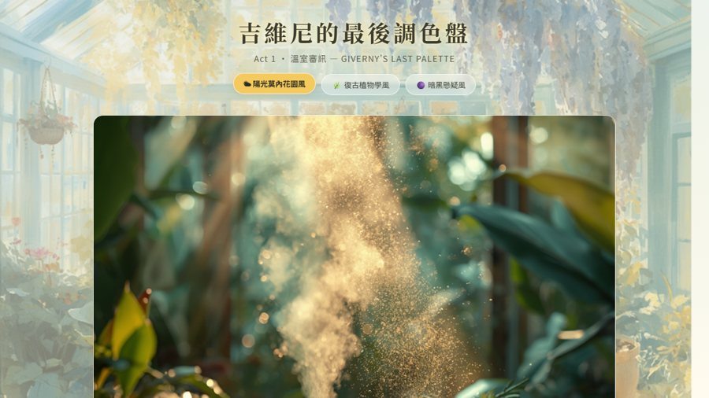

國立中興大學教師成長社群 · AI 融入教學
用 AI 做出
自己的教學工具
不需要會寫程式。從安裝 Claude Code、把影片變成教材，到把成果放上網路讓學生打開——講義與製作範例都收在這一頁，照順序走就能開始。
開始使用 AI：Claude Code 入門
Claude Code 是在終端機裡運作的 AI 助手，可以直接讀寫電腦裡的檔案、幫你執行任務。今天所有成品都是用它做的。
Claude Code 入門教學 （Windows）（Mac）
簡報式講義，共 9 頁，全程在 PowerShell 操作。 簡報式講義，共 11 頁，全程在 Terminal 操作，含 Homebrew 備援方案。
- 一次性安裝，以及「裝好了但打 claude 沒反應」的解法
- 每次開始工作的標準流程
- 三種工作模式：Auto、Plan、Dangerous
- 權限提示說明表：哪些可以放心允許、哪些要看內容
- 常用斜線指令、快捷鍵、啟動參數，以及 Skills
先看一眼：安裝只要一行
irm https://claude.ai/install.ps1 | iex
curl -fsSL https://claude.ai/install.sh | bash
# 先切到要工作的資料夾，再輸入
claude
把 YouTube 影片變成教材
多數影片摘要工具只抓聲音。這套流程連畫面上的投影片、圖表、字卡一起抓，讓 Claude 真的「看」影片。
用 YouTube 影片做教材：完整安裝與使用教學 （Windows）（Mac）
給完全沒裝過任何工具的人，照著打大約 15–20 分鐘。需要先完成 01 的 Claude Code 安裝。
- 安裝 yt-dlp、ffmpeg、git 與 watch 插件
- 用 /watch 看整支影片，或只看指定的一段
- 常見問題排解表
- 影片沒有字幕時的兩種做法
- 實測案例：沒字幕的 19 分鐘影片，單靠畫面整理出重點
它自動幫你做的事
/watch 影片網址 你想問的問題
放上網路：Git 與 GitHub Pages
做好的網頁只在自己電腦裡，學生打不開。GitHub Pages 可以免費把它變成一個公開網址，而且自動附 HTTPS。
UNIT 06｜GitHub Pages 免費上線
外部教材《從零到上線：用 AI 做出自己的網站》的第 6 單元，Windows 不需要裝 WSL 也能照做。
- Windows 三條路線：Git Bash、PowerShell、GitHub Desktop
- 三種站台型態，以及專案站台的路徑陷阱
- 設定推送權限：GitHub CLI、SSH 金鑰、Token
- 上線後才出現的問題排查表
- 自訂網域與 HTTPS
教材來源：bonmipang-2025《從零到上線：用 AI 做出自己的網站》。以上重點為該單元的摘要，完整內容請以原教材為準。
最短路徑：五步上線
登入 GitHub（只做一次）
gh auth login
在網站資料夾裡初始化
確認資料夾根目錄有 index.html。
git init git branch -M main
第一次提交
git add . git commit -m "feat: 初始版本"
建立遠端 repo 並推上去
gh repo create my-site --public --source=. --remote=origin --push
開啟 Pages
到 repo 的 Settings → Pages，選 Deploy from a branch，分支選 main、資料夾選 root。等 1–3 分鐘就有網址。
成果展示：實際做出來的東西
以下都是用 AI 做出來的實際成品，點進去可以直接操作。
量化研究法（上）第 1 週｜先不要吃棉花糖
一堂關於「數據怎麼騙人」的課。從棉花糖實驗談內生性的四張臉、資料結構與因果關係，最後帶出計量地圖。原本是 PDF，轉成網頁後用手機也能翻。
互動黑板
自己做的課堂即時互動工具。老師開一個房間，學生用手機掃 QR code 加入，就能一起做文字雲、投票、測驗與競標，結果即時顯示在黑板上。
三個交叉的傳說
黃金交叉、交叉補貼、共同持股。三個看似無關的「交叉」，帶學生走進量化研究的三個入口：現象、理論與資料。

吉維尼的最後調色盤
玩家扮演偵探，審訊嫌疑人、檢驗物證、重建因果邏輯鏈。破案需要用到化學、聲學、植物學等跨領域知識。
從 YouTube 影片擷取重點
實測一支 19 分 28 秒、沒有官方字幕的影片。單靠畫面上的圖表與字卡，整理出影片框架與 7 項重點，並附上局限說明。
從 YouTube 影片擷取重點
實測一支 19 分 28 秒、沒有官方字幕的影片。單靠畫面上的圖表與字卡，整理出影片框架與 7 項重點，並附上局限說明。